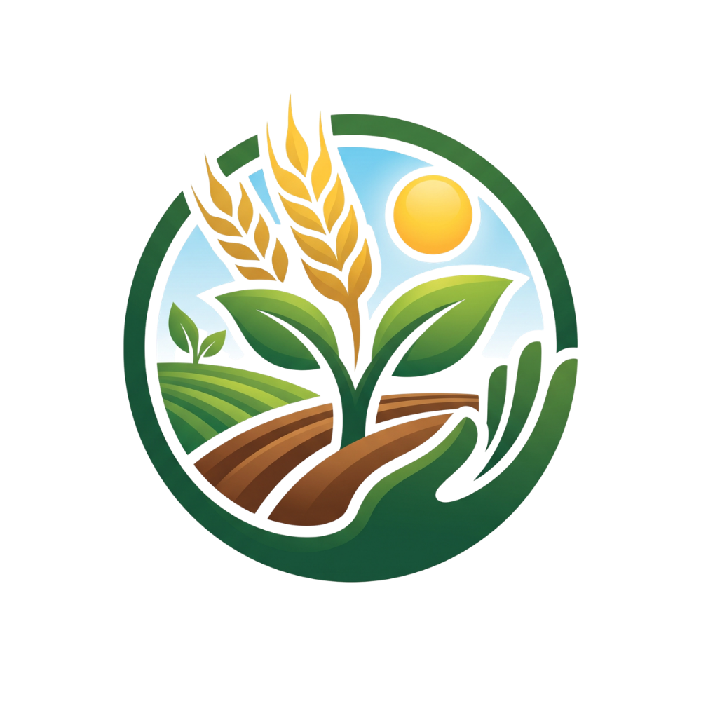

NASA Space Apps · Team SPIDERX
Agro Cosmic
Weave
Crop rotations that use less water, build soil, and hold up under climate stress.
বাংলাদেশের ৬৪ জেলার জন্য ফসল ও মাটির পরিকল্পনা
One year · four seasons

S1 · Winter
Mustard
সরিষা
S2 · Spring
Lentil
মসুর
S3 · Monsoon
Aman rice
আমন ধান
S4 · Summer
Mungbean
মুগডাল
Less water · less urea
NASA
POWER · MODIS · SMAP · NASADEM